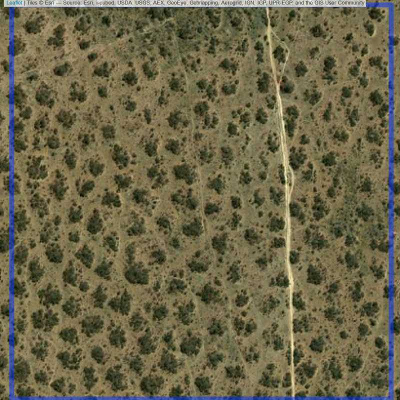
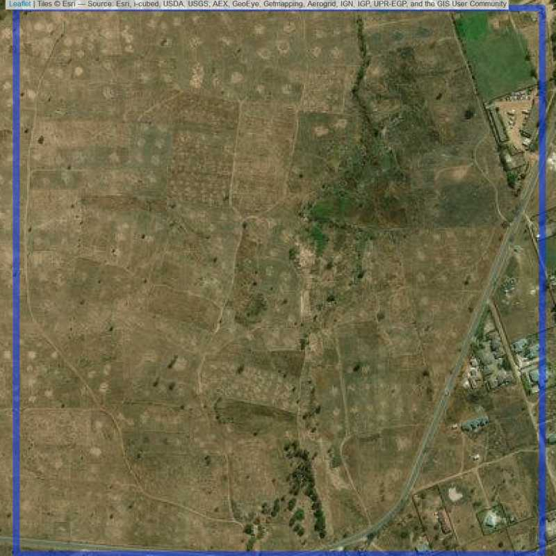
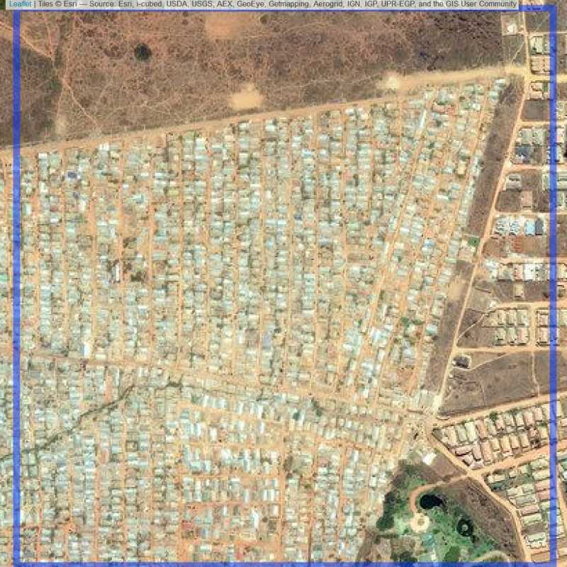

Chapter 5 Evaluating the Sample
For the cities we do not implement the pair-wise approach, because we assume travel costs will be relatively low anyways.
The function oversample_wrapper_non_pair returns a SpatialPolygonsDataFrame with the sampled units and replacements units. The sampled units are controlled by zooming into satelitte images to determine if there are actually people living in those units. For example, Figure 5.1 shows a clearly populated site.
5.1 Nairobi
make_pic("Nairobi@1@1",nairobi_sample_150,image_name = "example")
sapply(nairobi_replaced_id$Type %>%
unique,make_pic_loop,
data = nairobi_replaced_id,
sp_obj = nairobi_sample_150,
addition="Nairobi")Figure 5.1: Example of a populated site.
5.1.1 Identifying empty and underpopulated units
- The figures 5.2 to 5.4 seem to not be populated but business/industrial sites and will be replaced.
- Figure 5.5 to 5.9 seem to uninhabited and will be replaced.
- Figure 5.10 to 5.15 seem to be very sparsely populated and for each a replacement unit is drawn. (But we keep them in?)
- Figure 5.16 seems to be resort and will be replaced as well.
5.1.1.1 Industry
Figure 5.2: Industrial site in Nairobi. (ID = Nairobi@2@25 )
Figure 5.3: Industrial site in Nairobi. (ID = Nairobi@3@8 )
Figure 5.4: Industrial site in Nairobi. (ID = Nairobi@3@16 )

5.1.1.2 Empty units
Figure 5.5: Empty site in Nairobi. (ID = Nairobi@2@17 )
Figure 5.6: Empty site in Nairobi. (ID = Nairobi@2@41 )

Figure 5.7: Empty site in Nairobi. (ID = Nairobi@5@8 )

Figure 5.8: Empty site in Nairobi. (ID = Nairobi@6@16 )

Figure 5.9: Empty site in Nairobi. (ID = Nairobi@7@3 )

5.1.1.3 Almost empty units
Figure 5.10: Almost empty site Nairobi. (ID = Nairobi@4@17 )

Figure 5.11: Almost empty site Nairobi. (ID = Nairobi@6@14 )
Figure 5.12: Almost empty site Nairobi. (ID = Nairobi@6@17 )

Figure 5.13: Almost empty site Nairobi. (ID = Nairobi@7@3 )
Figure 5.14: Almost empty site Nairobi. (ID = Nairobi@7@8 )

Figure 5.15: Almost empty site Nairobi. (ID = Nairobi@8@2 )

5.1.1.4 Others
Figure 5.16: Not empty but maybe resort. (ID = Nairobi@2@11 )

5.1.2 Replacement units
Table 5.1: Number of units that need to be resampled from each bin.
| Bin | Frequency |
|---|---|
| 2 | 4 |
| 3 | 2 |
| 4 | 1 |
| 5 | 1 |
| 6 | 3 |
| 7 | 3 |
| 8 | 1 |
If the resampled unit is empty, it is left out.
make_pic_loop(type = "replaced",
data = nairobi_replacement_units,
sp_obj = nairobi_1k_sample_complete,
addition = "Nairobi")5.1.3 Replacement units
Figure 5.17: Replacement units (ID = Nairobi@2@47 )
Figure 5.18: Replacement units (ID = Nairobi@2@48 )

Figure 5.19: Replacement units (ID = Nairobi@2@49 )

Figure 5.20: Replacement units (ID = Nairobi@2@50 )

Figure 5.21: Replacement units (ID = Nairobi@3@23 )
Figure 5.22: Replacement units (ID = Nairobi@3@24 )
Figure 5.23: Replacement units (ID = Nairobi@4@24 )

Figure 5.24: Replacement units (ID = Nairobi@4@26 )
Figure 5.25: Replacement units (Unit is almost empty, and a replacement unit is drawn.) (ID = Nairobi@5@11 )

Figure 5.26: Replacement units (ID = Nairobi@5@12 )
Figure 5.27: Replacement units (ID = Nairobi@6@23 )

Figure 5.28: Replacement units (ID = Nairobi@6@24 )
Figure 5.29: Replacement units (Unit is almost empty, and a replacement unit is drawn.) (ID = Nairobi@6@25 )
Figure 5.30: Replacement units (ID = Nairobi@6@26 )

Figure 5.31: Replacement units (Unit is almost empty, and a replacement unit is drawn.) (ID = Nairobi@7@9 )
Figure 5.32: Replacement units (ID = Nairobi@7@10 )
Figure 5.33: Replacement units (ID = Nairobi@7@12 )
Figure 5.34: Replacement units (Unit is almost empty, and a replacement unit is drawn.) (ID = Nairobi@7@13 )
Figure 5.35: Replacement units (Unit is almost empty, and a replacement unit is drawn.) (ID = Nairobi@7@14 )

Figure 5.36: Replacement units (Unit is almost empty, and a replacement unit is drawn.) (ID = Nairobi@7@15 )
Figure 5.37: Replacement units (Unit is almost empty, and a replacement unit is drawn.) (ID = Nairobi@7@17 )
Figure 5.38: Replacement units (ID = Nairobi@7@18 )

Figure 5.39: Replacement units (Unit is almost empty, and a replacement unit is drawn.) (ID = Nairobi@8@3 )

Figure 5.40: Replacement units (Unit is almost empty, and a replacement unit is drawn.) (ID = Nairobi@8@4 )

Figure 5.41: Replacement units (Unit is almost empty, and a replacement unit is drawn.) (ID = Nairobi@8@5 )

Figure 5.42: Replacement units (ID = Nairobi@8@6 )
nairobi_1k_sample_complete_100m <- add_100m_units(nairobi_1k_sample_complete)coord_string <- c("S03°23.602’;E037°40.783’
S03°23.604’;E037°40.756’
S03°16.746’;E038°18.349’
S03°16.724’;E038°18.337’
S-1.842537;E36.785076
S-1.839773;E36.782486
S-1.389256;E36.866333
S-1.389330;E36.683559
S-1.994650;E36.867916
S-1.994853;E36.866333
S01°06.434’;E036°38.363’
S01°06.461’;E036°38.355’
S01°00.679’;E036°54.028’
S01°00.673’;E036°54.022’
S01°14.124’;E036°56.020’
S01°14.152’;E036°56.081’")
coord_matrix <- coord_string %>%
strsplit("\n") %>%
unlist() %>%
strsplit(";") %>%
do.call(rbind,.)
coord_degree <- coord_matrix[grep("°",coord_matrix[,1]),] %>%
apply(2,function(y) {
y %>%
gsub("S","-",.,fixed=TRUE) %>%
gsub("[A-Z]","",.) %>%
strsplit("[°\\.]") %>%
lapply(function(x) {
x <- x %>%
gsub("[^0-9\\-]","",.) %>%
as.numeric()
x[1] + x[2]/60 + x[3]/3600
}) %>%
unlist()
})
coord_decimal <- coord_matrix[!grepl("°",coord_matrix[,1]),] %>%
gsub("[A-Z]","",.) %>%
apply(2,as.numeric)
nairobi_fdgs <- rbind(coord_degree,coord_decimal) %>%
as.data.frame() %>%
SpatialPoints(CRS("+init=epsg:4326")) %>%
spTransform(CRS(proj4string(nairobi_1k_sample_complete_100m)))
if (over(nairobi_1k_sample_complete_100m,nairobi_fdgs,returnList = FALSE) %>%
is.na() %>%
`!` %>%
which() %>%
length() == 0) cat("No overlap between sample and FDGs.")## No overlap between sample and FDGs.## Warning in fld_names == attr(res, "ofld_nms"): longer object length is not
## a multiple of shorter object length
## Warning in fld_names == attr(res, "ofld_nms"): longer object length is not
## a multiple of shorter object length5.2 Lusaka
Table 5.2: Lusaka: Number of units that need to be resampled from each bin.
| Bin | Frequency |
|---|---|
| 1 | 4 |
| 2 | 8 |
| 3 | 8 |
| 4 | 9 |
| 5 | 4 |
| 6 | 4 |
| 7 | 6 |
| 8 | 4 |
sapply(lusaka_replaced_id$Type %>%
unique,make_pic_loop,
data = lusaka_replaced_id,
sp_obj = lusaka_sample_150,
addition = "Lusaka")5.2.0.1 Industry
Figure 5.43: Industrial site in Lusaka (ID = Lusaka@1@7 )
Figure 5.44: Industrial site in Lusaka (ID = Lusaka@1@10 )

Figure 5.45: Industrial site in Lusaka (ID = Lusaka@2@25 )
Figure 5.46: Industrial site in Lusaka (ID = Lusaka@3@9 )
Figure 5.47: Industrial site in Lusaka (ID = Lusaka@3@17 )
Figure 5.48: Industrial site in Lusaka (ID = Lusaka@4@24 )

5.2.0.2 Empty units
Figure 5.49: Empty site in Lusaka (ID = Lusaka@1@17 )

Figure 5.50: Empty site in Lusaka (ID = Lusaka@2@8 )

Figure 5.51: Empty site in Lusaka (ID = Lusaka@2@17 )
Figure 5.52: Empty site in Lusaka (ID = Lusaka@3@3 )
Figure 5.53: Empty site in Lusaka (ID = Lusaka@3@11 )

Figure 5.54: Empty site in Lusaka (ID = Lusaka@3@14 )

Figure 5.55: Empty site in Lusaka (ID = Lusaka@3@16 )
Figure 5.56: Empty site in Lusaka (ID = Lusaka@4@17 )

Figure 5.57: Empty site in Lusaka (ID = Lusaka@5@2 )

Figure 5.58: Empty site in Lusaka (ID = Lusaka@5@3 )
Figure 5.59: Empty site in Lusaka (ID = Lusaka@6@2 )

Figure 5.60: Empty site in Lusaka (ID = Lusaka@6@3 )

Figure 5.61: Empty site in Lusaka (ID = Lusaka@7@2 )

Figure 5.62: Empty site in Lusaka (ID = Lusaka@7@3 )

Figure 5.63: Empty site in Lusaka (ID = Lusaka@7@5 )
Figure 5.64: Empty site in Lusaka (ID = Lusaka@7@7 )

Figure 5.65: Empty site in Lusaka (ID = Lusaka@8@1 )

Figure 5.66: Empty site in Lusaka (ID = Lusaka@8@3 )
5.2.0.3 Almost empty units
Figure 5.67: Almost empty site Lusaka (ID = Lusaka@2@3 )
Figure 5.68: Almost empty site Lusaka (ID = Lusaka@2@14 )

Figure 5.69: Almost empty site Lusaka (ID = Lusaka@2@16 )

Figure 5.70: Almost empty site Lusaka (ID = Lusaka@2@34 )

Figure 5.71: Almost empty site Lusaka (ID = Lusaka@2@40 )
Figure 5.72: Almost empty site Lusaka (ID = Lusaka@3@25 )
Figure 5.73: Almost empty site Lusaka (ID = Lusaka@3@27 )

Figure 5.74: Almost empty site Lusaka (ID = Lusaka@4@3 )
Figure 5.75: Almost empty site Lusaka (ID = Lusaka@4@4 )
Figure 5.76: Almost empty site Lusaka (ID = Lusaka@4@8 )

Figure 5.77: Almost empty site Lusaka (ID = Lusaka@4@9 )
Figure 5.78: Almost empty site Lusaka (ID = Lusaka@4@13 )
Figure 5.79: Almost empty site Lusaka (ID = Lusaka@4@16 )
Figure 5.80: Almost empty site Lusaka (ID = Lusaka@4@22 )

Figure 5.81: Almost empty site Lusaka (ID = Lusaka@5@1 )

Figure 5.82: Almost empty site Lusaka (ID = Lusaka@5@4 )

Figure 5.83: Almost empty site Lusaka (ID = Lusaka@6@4 )

Figure 5.84: Almost empty site Lusaka (ID = Lusaka@6@7 )

Figure 5.85: Almost empty site Lusaka (ID = Lusaka@7@4 )

Figure 5.86: Almost empty site Lusaka (ID = Lusaka@7@6 )

Figure 5.87: Almost empty site Lusaka (ID = Lusaka@8@2 )
Figure 5.88: Almost empty site Lusaka (ID = Lusaka@8@4 )

make_pic_loop(type = "replaced",
data = lusaka_replacement_units,
sp_obj = lusaka_1k_sample_complete,
addition = "Lusaka")5.2.1 Replacement units
Figure 5.89: Replacement units (Unit is almost empty, and a replacement unit is drawn.) (ID = Lusaka@1@25 )

Figure 5.90: Replacement units (ID = Lusaka@1@26 )

Figure 5.91: Replacement units (ID = Lusaka@1@27 )
Figure 5.92: Replacement units (ID = Lusaka@1@30 )
Figure 5.93: Replacement units (Unit is almost empty, and a replacement unit is drawn.) (ID = Lusaka@1@31 )

Figure 5.94: Replacement units (ID = Lusaka@1@32 )
Figure 5.95: Replacement units (ID = Lusaka@2@46 )
Figure 5.96: Replacement units (ID = Lusaka@2@47 )

Figure 5.97: Replacement units (ID = Lusaka@2@48 )
Figure 5.98: Replacement units (ID = Lusaka@2@49 )

Figure 5.99: Replacement units (Unit is almost empty, and a replacement unit is drawn.) (ID = Lusaka@2@50 )
Figure 5.100: Replacement units (ID = Lusaka@2@51 )
Figure 5.101: Replacement units (ID = Lusaka@2@52 )

Figure 5.102: Replacement units (ID = Lusaka@2@53 )

Figure 5.103: Replacement units (ID = Lusaka@2@54 )

Figure 5.104: Replacement units (ID = Lusaka@3@34 )

Figure 5.105: Replacement units (ID = Lusaka@3@35 )

Figure 5.106: Replacement units (ID = Lusaka@3@36 )

Figure 5.107: Replacement units (ID = Lusaka@3@37 )
Figure 5.108: Replacement units (ID = Lusaka@3@38 )

Figure 5.109: Replacement units (ID = Lusaka@3@39 )
Figure 5.110: Replacement units (Unit is almost empty, and a replacement unit is drawn.) (ID = Lusaka@3@40 )
Figure 5.111: Replacement units (Unit is almost empty, and a replacement unit is drawn.) (ID = Lusaka@3@41 )
Figure 5.112: Replacement units (ID = Lusaka@3@42 )

Figure 5.113: Replacement units (ID = Lusaka@3@44 )

Figure 5.114: Replacement units (ID = Lusaka@4@26 )

Figure 5.115: Replacement units (Unit is almost empty, and a replacement unit is drawn.) (ID = Lusaka@4@27 )

Figure 5.116: Replacement units (ID = Lusaka@4@28 )

Figure 5.117: Replacement units (ID = Lusaka@4@29 )
Figure 5.118: Replacement units (Unit is almost empty, and a replacement unit is drawn.) (ID = Lusaka@4@30 )
Figure 5.119: Replacement units (Unit is almost empty, and a replacement unit is drawn.) (ID = Lusaka@4@31 )
Figure 5.120: Replacement units (Unit is almost empty, and a replacement unit is drawn.) (ID = Lusaka@4@32 )
Figure 5.121: Replacement units (ID = Lusaka@4@33 )
Figure 5.122: Replacement units (Unit is almost empty, and a replacement unit is drawn.) (ID = Lusaka@4@34 )
Figure 5.123: Replacement units (ID = Lusaka@4@35 )
Figure 5.124: Replacement units (ID = Lusaka@4@36 )

Figure 5.125: Replacement units (ID = Lusaka@4@37 )

Figure 5.126: Replacement units (ID = Lusaka@4@38 )

Figure 5.127: Replacement units (ID = Lusaka@4@39 )

Figure 5.128: Replacement units (Unit is almost empty, and a replacement unit is drawn.) (ID = Lusaka@5@5 )

Figure 5.129: Replacement units (Unit is almost empty, and a replacement unit is drawn.) (ID = Lusaka@5@7 )

Figure 5.130: Replacement units (Unit is almost empty, and a replacement unit is drawn.) (ID = Lusaka@5@8 )
Figure 5.131: Replacement units (Unit is almost empty, and a replacement unit is drawn.) (ID = Lusaka@5@9 )

Figure 5.132: Replacement units (Unit is almost empty, and a replacement unit is drawn.) (ID = Lusaka@5@10 )

Figure 5.133: Replacement units (Unit is almost empty, and a replacement unit is drawn.) (ID = Lusaka@5@11 )

Figure 5.134: Replacement units (Unit is almost empty, and a replacement unit is drawn.) (ID = Lusaka@5@12 )
Figure 5.135: Replacement units (Unit is almost empty, and a replacement unit is drawn.) (ID = Lusaka@5@13 )

Figure 5.136: Replacement units (Unit is almost empty, and a replacement unit is drawn.) (ID = Lusaka@5@18 )

Figure 5.137: Replacement units (ID = Lusaka@5@20 )

Figure 5.138: Replacement units (Unit is almost empty, and a replacement unit is drawn.) (ID = Lusaka@5@21 )
Figure 5.139: Replacement units (ID = Lusaka@5@22 )
Figure 5.140: Replacement units (Unit is almost empty, and a replacement unit is drawn.) (ID = Lusaka@5@23 )

Figure 5.141: Replacement units (Unit is almost empty, and a replacement unit is drawn.) (ID = Lusaka@5@24 )
Figure 5.142: Replacement units (ID = Lusaka@5@26 )
Figure 5.143: Replacement units (Unit is almost empty, and a replacement unit is drawn.) (ID = Lusaka@5@31 )
Figure 5.144: Replacement units (Unit is almost empty, and a replacement unit is drawn.) (ID = Lusaka@5@32 )

Figure 5.145: Replacement units (Unit is almost empty, and a replacement unit is drawn.) (ID = Lusaka@5@33 )
Figure 5.146: Replacement units (Unit is almost empty, and a replacement unit is drawn.) (ID = Lusaka@5@37 )

Figure 5.147: Replacement units (Unit is almost empty, and a replacement unit is drawn.) (ID = Lusaka@5@38 )

Figure 5.148: Replacement units (Unit is almost empty, and a replacement unit is drawn.) (ID = Lusaka@5@41 )

Figure 5.149: Replacement units (Unit is almost empty, and a replacement unit is drawn.) (ID = Lusaka@5@42 )

Figure 5.150: Replacement units (Unit is almost empty, and a replacement unit is drawn.) (ID = Lusaka@5@43 )
Figure 5.151: Replacement units (Unit is almost empty, and a replacement unit is drawn.) (ID = Lusaka@5@44 )
Figure 5.152: Replacement units (Unit is almost empty, and a replacement unit is drawn.) (ID = Lusaka@6@9 )

Figure 5.153: Replacement units (Unit is almost empty, and a replacement unit is drawn.) (ID = Lusaka@6@10 )
Figure 5.154: Replacement units (ID = Lusaka@6@12 )

Figure 5.155: Replacement units (Unit is almost empty, and a replacement unit is drawn.) (ID = Lusaka@6@13 )

Figure 5.156: Replacement units (Unit is almost empty, and a replacement unit is drawn.) (ID = Lusaka@6@15 )

Figure 5.157: Replacement units (Unit is almost empty, and a replacement unit is drawn.) (ID = Lusaka@6@16 )

Figure 5.158: Replacement units (Unit is almost empty, and a replacement unit is drawn.) (ID = Lusaka@6@18 )
Figure 5.159: Replacement units (ID = Lusaka@6@20 )

Figure 5.160: Replacement units (ID = Lusaka@6@21 )
Figure 5.161: Replacement units (Unit is almost empty, and a replacement unit is drawn.) (ID = Lusaka@6@23 )
Figure 5.162: Replacement units (Unit is almost empty, and a replacement unit is drawn.) (ID = Lusaka@6@24 )

Figure 5.163: Replacement units (Unit is almost empty, and a replacement unit is drawn.) (ID = Lusaka@6@25 )

Figure 5.164: Replacement units (Unit is almost empty, and a replacement unit is drawn.) (ID = Lusaka@6@26 )

Figure 5.165: Replacement units (ID = Lusaka@6@28 )
Figure 5.166: Replacement units (Unit is almost empty, and a replacement unit is drawn.) (ID = Lusaka@7@8 )

Figure 5.167: Replacement units (Unit is almost empty, and a replacement unit is drawn.) (ID = Lusaka@7@9 )
Figure 5.168: Replacement units (Unit is almost empty, and a replacement unit is drawn.) (ID = Lusaka@7@10 )

Figure 5.169: Replacement units (Unit is almost empty, and a replacement unit is drawn.) (ID = Lusaka@7@11 )
Figure 5.170: Replacement units (Unit is almost empty, and a replacement unit is drawn.) (ID = Lusaka@7@12 )

Figure 5.171: Replacement units (Unit is almost empty, and a replacement unit is drawn.) (ID = Lusaka@7@15 )
Figure 5.172: Replacement units (Unit is almost empty, and a replacement unit is drawn.) (ID = Lusaka@7@23 )

Figure 5.173: Replacement units (Unit is almost empty, and a replacement unit is drawn.) (ID = Lusaka@7@24 )

Figure 5.174: Replacement units (Unit is almost empty, and a replacement unit is drawn.) (ID = Lusaka@7@25 )

Figure 5.175: Replacement units (ID = Lusaka@7@26 )
Figure 5.176: Replacement units (Unit is almost empty, and a replacement unit is drawn.) (ID = Lusaka@7@28 )

Figure 5.177: Replacement units (Unit is almost empty, and a replacement unit is drawn.) (ID = Lusaka@7@29 )
Figure 5.178: Replacement units (Unit is almost empty, and a replacement unit is drawn.) (ID = Lusaka@7@30 )

Figure 5.179: Replacement units (Unit is almost empty, and a replacement unit is drawn.) (ID = Lusaka@7@32 )

Figure 5.180: Replacement units (Unit is almost empty, and a replacement unit is drawn.) (ID = Lusaka@7@33 )
Figure 5.181: Replacement units (Unit is almost empty, and a replacement unit is drawn.) (ID = Lusaka@7@36 )
Figure 5.182: Replacement units (Unit is almost empty, and a replacement unit is drawn.) (ID = Lusaka@7@38 )
Figure 5.183: Replacement units (Unit is almost empty, and a replacement unit is drawn.) (ID = Lusaka@7@39 )

Figure 5.184: Replacement units (Unit is almost empty, and a replacement unit is drawn.) (ID = Lusaka@7@42 )

Figure 5.185: Replacement units (ID = Lusaka@7@45 )
Figure 5.186: Replacement units (ID = Lusaka@7@47 )
Figure 5.187: Replacement units (Unit is almost empty, and a replacement unit is drawn.) (ID = Lusaka@7@48 )

Figure 5.188: Replacement units (Unit is almost empty, and a replacement unit is drawn.) (ID = Lusaka@7@49 )
Figure 5.189: Replacement units (Unit is almost empty, and a replacement unit is drawn.) (ID = Lusaka@7@52 )

Figure 5.190: Replacement units (Unit is almost empty, and a replacement unit is drawn.) (ID = Lusaka@7@53 )
Figure 5.191: Replacement units (Unit is almost empty, and a replacement unit is drawn.) (ID = Lusaka@7@54 )

Figure 5.192: Replacement units (ID = Lusaka@7@55 )
Figure 5.193: Replacement units (Unit is almost empty, and a replacement unit is drawn.) (ID = Lusaka@7@56 )
Figure 5.194: Replacement units (ID = Lusaka@8@7 )
Figure 5.195: Replacement units (Unit is almost empty, and a replacement unit is drawn.) (ID = Lusaka@8@8 )

Figure 5.196: Replacement units (Unit is almost empty, and a replacement unit is drawn.) (ID = Lusaka@8@9 )

Figure 5.197: Replacement units (ID = Lusaka@8@10 )

Figure 5.198: Replacement units (ID = Lusaka@8@12 )
Figure 5.199: Replacement units (Unit is almost empty, and a replacement unit is drawn.) (ID = Lusaka@8@15 )

Figure 5.200: Replacement units (Unit is almost empty, and a replacement unit is drawn.) (ID = Lusaka@8@17 )
Figure 5.201: Replacement units (Unit is almost empty, and a replacement unit is drawn.) (ID = Lusaka@8@19 )

Figure 5.202: Replacement units (ID = Lusaka@8@20 )

lusaka_1k_sample_complete_100m <- add_100m_units(lusaka_1k_sample_complete)
zambia_fdgs <- readKML("data/fdgs/Zambia Northern Eastern FGD Locations.kml") %>%
as("SpatialPoints")## OGR data source with driver: KML
## Source: "C:\Users\xnicse\Dropbox\Projects\GLD sampling methods\master_1\sampling_documentation\data\fdgs\Zambia Northern Eastern FGD Locations.kml", layer: "Northern___Eastern_FGD_Locations"
## with 9 features
## It has 2 fieldsif (over(lusaka_1k_sample_complete_100m,zambia_fdgs) %>%
is.na %>%
`!` %>%
which() %>%
length() == 0) cat("No overlap between sample and FDGs.")## No overlap between sample and FDGs.## Warning in fld_names == attr(res, "ofld_nms"): longer object length is not
## a multiple of shorter object length
## Warning in fld_names == attr(res, "ofld_nms"): longer object length is not
## a multiple of shorter object length